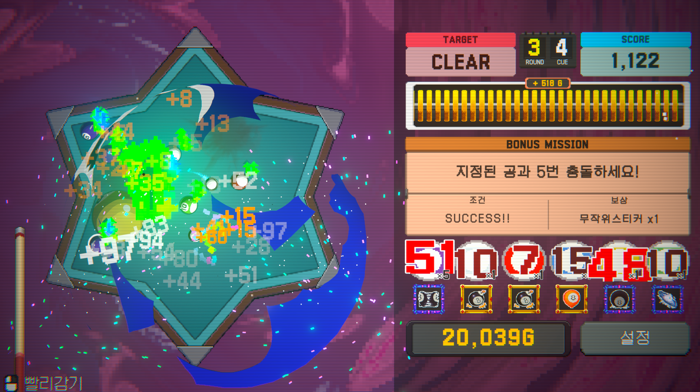
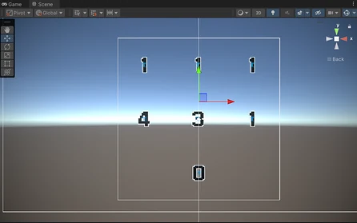
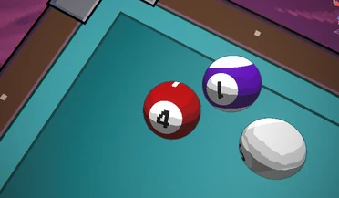
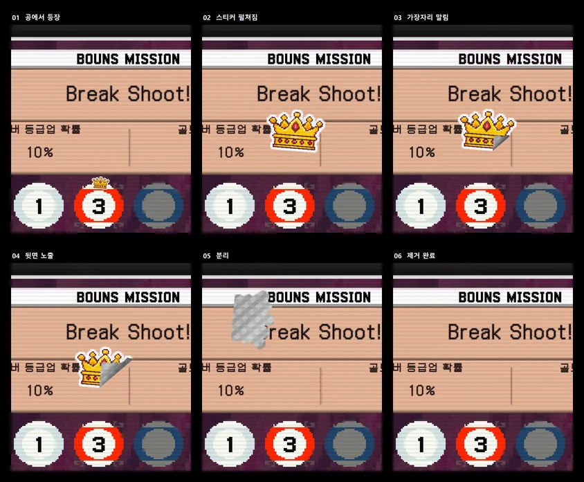

Break Shoot / 셰이더와 연출
당구공의 능력 재질, 숫자 표시와 스티커 제거 연출을 게임 흐름에 맞춰 구현한 TA 작업.

01 / Render texture
하나의 텍스처로 숫자 표시
공마다 숫자를 보여주기 위해 숫자를 하나의 512×512 Render Texture에 모아 렌더링했습니다. 각 공은 3×3으로 분할한 UV 영역을 참조합니다. 숫자가 변경될 때만 카메라를 활성화하고 렌더링 이후 다시 꺼 반복 렌더링을 줄였습니다.


02 / Uber shader
능력 재질을 하나의 셰이더로
능력 재질 12종과 초월 능력 재질 8종을 우버 셰이더로 통합했습니다. 기본 공까지 포함하면 21종의 재질을 지원합니다. 키워드 전환으로 재질을 선택하고 조건부 컴파일로 필요한 연산 경로를 구성했습니다.

드로우콜과 반복 렌더링을 고려한 구현입니다. 비교 조건이 명시된 실측 자료가 없어 성능 개선율이나 프레임 시간 수치는 제시하지 않습니다.
03 / Sticker animation
종이처럼 말리며 떼어지는 스티커
DOTween으로 위치와 크기를 조절해 공 아이콘 위로 스티커가 올라오도록 했습니다. 앞면을 점차 가리고 뒷면을 드러내며 그림자와 하이라이트를 더해 종이가 말리는 느낌을 구현했습니다.

이미지만 교체하면 같은 연출을 사용할 수 있도록 구성하고, 여러 장을 제거할 때는 시간차를 두어 재생했습니다.
04 / Recognition
팀으로 만든 결과
2025 넥슨 게임잼 ‘재밌넥’ 대상, 2026 BUILD 051 딥 블루상(일반부 1등)을 수상했습니다. 2025 G-Star 스팀 인디 쇼케이스, 2026 BUILD 051, 2026 BIC Fest에 전시했습니다.
CREDITS & SCOPE
기여 범위와 작업 기록
5인 팀 프로젝트에서 TA로 셰이더, 포스트프로세싱, 3D 에셋, 애니메이션, 이펙트와 연출을 담당했습니다. 수상과 전시는 팀 프로젝트의 성과입니다.
기록 기준: 2026.10 포트폴리오, 2·9–11쪽.